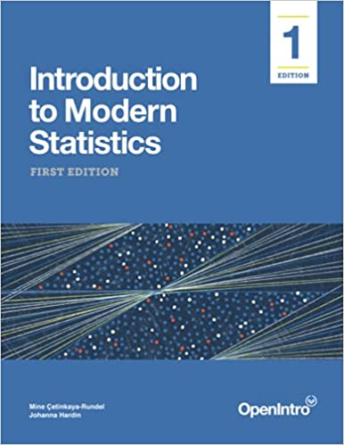
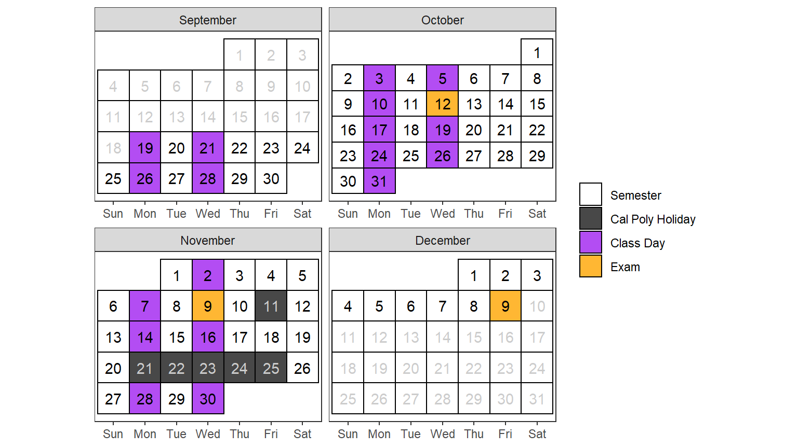
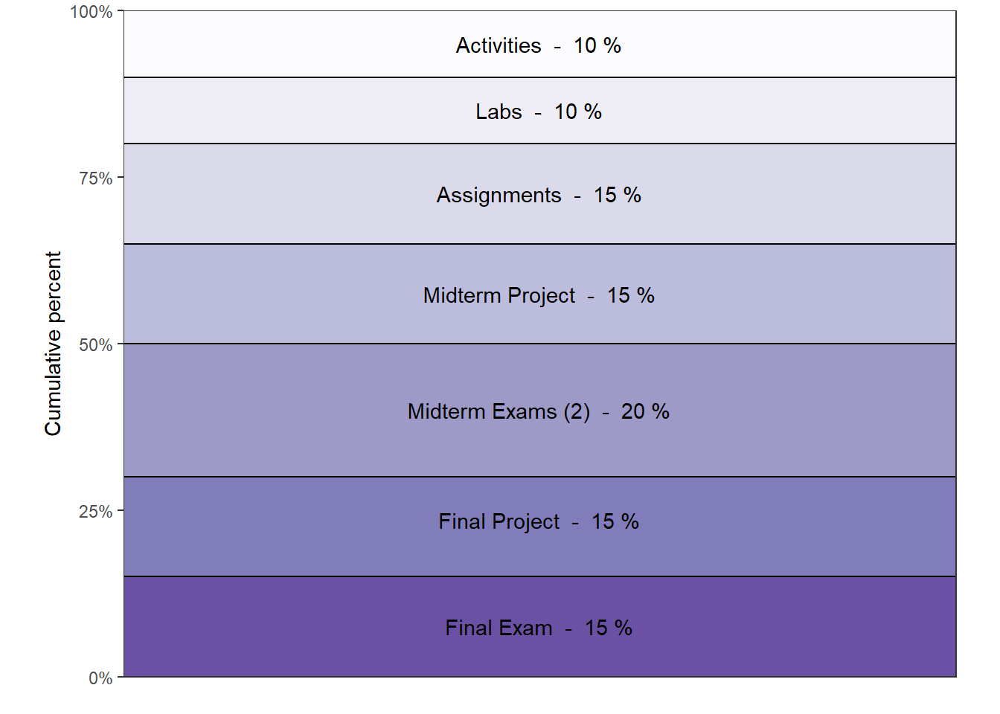

Stat 218: Applied Statistics for Life Sciences
| Instructor | Class |
|---|---|
| Dr. Emily Robinson | Location: 186-C203 (Construction Innovations Ctr) |
| Email: erobin17@calpoly.edu | Time: Monday/Wednesday 2:10 PM - 4:00 PM |
| Office: 25-103 (Faculty Offices East) | Office Hours: Thursdays 2:30 PM - 4:30 PM or by Appointment Schedule here |
Course Resources
We will be using Introduction to Modern Statistics (IMS) by Mine Çetinkaya-Rundel and Johanna Hardin, a free online text; you have the option to obtain a printed copy if you wish.

R is the statistical software we will be using in this course (https://cran.r-project.org/)R software. We will be interacting with RStudio through RStudio Cloud (https://rstudio.cloud/). You will join the Stat 218 workspace, and then be able to access the course homework and lab assignments. We will be walking through this in the first week of lab!RStudio Cloud will be your resource for course lab assignments
- data sets
- lab assignments
- group projects
- software resources
Canvas will be your resource for the course materials necessary for each week. There will be a published “coursework” page which you can access through RStudio Connect. The page will walk you through what you are expected to do each week, including:
- textbook reading
- lecture videos
- homework questions
- quiz questions
Important: Make sure you are receiving email notifications for any Canvas activity. That includes: announcements, emails, comments, etc. In Canvas, click on your name, then Notifications. Check that Canvas is using an email address that you regularly check; you have the option of registering a mobile number. Check the boxes to get notifications for announcements, content, discussions, and grades.
There is free drop-in tutoring for 100- and 200-level math and stat courses through the writing and learning center!
The Writing and Learning Center offers virtual and in-person tutoring appointments with four locations across campus and hours available daily Sunday thru Friday. For more information on our hours and locations, visit the Tutoring Hours webpage.
Course Description
Stat 218 is designed to engage you in the statistical investigation process from developing a research question and data collection methods to analyzing and communicating results. This course introduces basic descriptive and inferential statistics using both traditional (normal and \(t\)-distribution) and simulation approaches including confidence intervals and hypothesis testing on means (one-sample, two-sample, paired), proportions (one-sample, two-sample), regression and correlation. You will be exposed to numerous examples of real-world applications of statistics that are designed to help you develop a conceptual understanding of statistics.
Course Objectives
After taking this course, you will be able to:
- Understand and appreciate how statistics affects your daily life and the fundamental role of statistics in all disciplines.
- Evaluate statistics and statistical studies you encounter in your other courses.
- Critically read news stories based on statistical studies as an informed consumer of data.
- Assess the role of randomness and variability in different contexts.
- Use basic methods to conduct and analyze statistical studies using statistical software.
- Evaluate and communicate answers to the four pillars of statistical inference: How strong is the evidence of an effect? What is the size of the effect? How broadly do the conclusions apply? Can we say what caused the observed difference?
GE: Mathematics / Quantitative Reasoning
This course fulfills the B4: Mathematics / Quantitative Reasoning requirement of the General Education curriculum because learning probability and statistics allows us to disentangle what’s really happening in nature from “noise” inherent in data collection. STAT 218 builds critical thinking skills which form the basis of statistical inference, allowing students to evaluate claims from data.
After completing an Area B4 course, students should be able to:
- Calculate and interpret various descriptive statistics
- Identify and describe data collection methods based on simple random sampling or simple experimental designs
- Construct confidence intervals for a single mean, differences between means for independent and paired samples, a single proportion, and the difference between two proportions from independent samples, and interpret the results in the context of the life sciences
- Formulate various decision problems in the life sciences in terms of hypothesis tests.
- Calculate parametric hypothesis tests for the difference in two independent sample means and two independent sample proportions, Chi-square goodness-of-fit, Chi-square test for independence, and interpret the results in the context of the life sciences.
- Calculate and interpret non-parametric hypothesis test for two independent sample means.
- Describe relationships between two quantitative variables using simple linear regression.
Prerequisites
Entrance to STAT 218 requires at least one of the following be met:
- Grade of C- or better in MATH 115
- Grade of B or better in MATH 96
- appropriate placement on the Math Placement Exam
You should have familiarity with computers and technology (e.g., Internet browsing, word processing, opening/saving files, converting files to PDF format, sending and receiving e-mail, etc.).
Class Schedule & Topic Outline
This schedule is tentative and subject to change.

| Date | Topic |
|---|---|
| Sep 19, Sep 21 | Introduction to Data |
| Sep 26, Sep 28 | Quantitative Variable Exploratory Data Analysis |
| Oct 3, Oct 5 | Inference for One Mean |
| Oct 10 | Simple Linear Regression |
| Oct 12 | Midterm Exam 1 (In Class) |
| Oct 17, Oct 19 | Difference in Means |
| Oct 24, Oct 26 | Paired Data |
| Oct 31, Nov 2 | Analysis of Variance (ANOVA) |
| Nov 7 | One Categorical Variable Exploratory Data Analysis |
| Nov 9 | Midterm Exam 2 (In Class) |
| Nov 14, Nov 16 | One Categorical Variable Inference |
| Nov 28, Nov 30 | Two Categorical Variable Inference |
| Dec 9 | Final Exam (1:10 - 4:00 PM) |
Course Expectations
You will get out of this course what you put in. The following excerpt was taken from Rob Jenkins’ article “Defining the Relationship” which was published in The Chronicle of Higher Education (August 8, 2016). This accurately summarizes what I expect of you in my classroom (and also what you should expect of me).
“I’d like to be your partner. More than anything, I’d like for us to form a mutually beneficial alliance in this endeavor we call education.
I pledge to do my part. I will:
- Stay abreast of the latest ideas in my field.
- Teach you what I believe you need to know; with all the enthusiasm I possess.
- Invite your comments and questions and respond constructively.
- Make myself available to you outside of class (within reason).
- Evaluate your work carefully and return it promptly with feedback.
- Be as fair, respectful, and understanding as I can humanly be.
- If you need help beyond the scope of this course, I will do my best to provide it or see that you get it.
In return, I expect you to:
- Show up for class each day or let me know (preferably in advance) if you have some good reason to be absent.
- Do your reading and other assignments outside of class and be prepared for each class meeting.
- Focus during class on the work we’re doing and not on extraneous matters (like whoever or whatever is on your phone at the moment).
- Participate in class discussions.
- Be respectful of your fellow students and their points of view.
- In short, I expect you to devote as much effort to learning as I devote to teaching.
What you get out of this relationship is that you’ll be better equipped to succeed in this and other college courses, work-related assignments, and life in general. What I get is a great deal of professional and personal satisfaction. Because I do really like you guys and want the best for you.”
Course Policies
Assessment/Grading
Your grade in STAT 218 will contain the following components:

Lower bounds for grade cutoffs are shown in the following table. I will not “round up” grades at the end of the semester beyond strict mathematical rules of rounding.
| Letter grade | X + | X | X - |
|---|---|---|---|
| A | 97 | 94 | 90 |
| B | 87 | 84 | 80 |
| C | 77 | 74 | 70 |
| D | 67 | 64 | 61 |
| F | <61 |
Interpretation of this table:
- A grade of 85 will receive a B.
- A grade of 77 will receive a C+.
- A grade of 70 will receive a C-.
- Anything below a 61 will receive an F.
General Evaluation Criteria
In every assignment, discussion, and written component of this class, you are expected to demonstrate that you are intellectually engaging with the material. I will evaluate you based on this engagement, which means that technically correct but low effort answers which do not demonstrate engagement or understanding will receive no credit.
While this is not an English class, grammar and spelling are important, as is your ability to communicate technical information in writing; both of these criteria will be used in addition to assignment-specific rubrics to evaluate your work.
Course Organization
Communication
Course material will be posted in Canvas modules and announcements will be used to let you know what is due over the next week.
We will use Canvas discussion boards to manage questions and responses regarding course content. There are discussion forums for the different components of each week (e.g., Week 1 Lab). Please do not send me an email about homework questions or questions about the course material. It is incredibly helpful for others in the course to see the questions you have and the responses to those questions. If you think you can answer another student’s question, please respond!
You can expect me to reply to emails within 48 hours during the week (72 hours on weekends). If you don’t hear back from me in this time span, assume I did not receive your email and resend it!
Assessment Breakdown
Reading & Videos (5%)
You will be expected to complete the assigned textbook reading and course videos prior to attending class each week. As you complete the reading and watch the videos, you should complete the concept check quiz questions. You can retake the video quizzes as many times as you like (the most recent grade will be recorded in Canvas) until the deadline.
- Concept check quizzes are due Monday at 8pm Pacific Time each week.
- The two lowest concept check quiz grades will be dropped.
Activities (10%)
Monday’s classes will be dedicated to meeting with your classmates and instructor to work through that week’s group activity. Attendance and completion of the activity counts towards this portion of your grade.
- Printed activities will be provided for you on Monday, with Word and PDF files posted on Canvas
- Activities will be checked individually for completion at the beginning of class on Wednesday.
- If you have an excused absence the day the activity is due (e.g., quarantine or ill), you may email me a scanned copy of the completed activity for credit. This must be received by 8pm Pacific Time on the day the activity would be checked in class.
- The lowest activity grade will be dropped.
Labs (10%)
Every Wednesday, you will meet with your classmates and instructor to work through that week’s Rstudio Cloud group lab. The lab will reinforce the ideas learned in the activities completed Monday, through the use of R to explore and analyze data.
- Each group will turn in selected questions from the lab to Canvas. Labs are due Friday at 8pm Pacific Time each week.
- Each individual student will also turn in the entirety of each lab for completion at the beginning of class on Monday.
- The lowest lab grade will be dropped.
Individual Assignments (15%)
You will complete weekly assignments in Canvas. These should be completed individually (meaning all answers should be written in your own words), but you may use your classmates, tutors, or your instructor for assistance.
- Weekly assignments are due Sunday at 8pm Pacific Time each week.
- The lowest assignment grade will be dropped.
Midterm & Final Projects (25%)
There will be two projects throughout the quarter, where you will be asked to apply the statistical concepts you have learned in the context of real data. Each of these projects will be done in the teams you have been working with in class. More details will be provided during class.
Midterm exams (20%)
There will be one midterm exam (worth 15% of the course grade). The midterm exam will be taken in class during your normal in-class time. Each exam has a group (Wednesday) and individual (Friday) component. A practice exam will be released in Canvas one week prior to the exam, with solutions to the practice exam released in Canvas the Friday prior to the exam. Further details, resources, and instructions for each exam will be posted the week prior to the exam in Canvas.
Group portion:
Group midterm exam 1 will be: Wednesday, April 27
Group midterm exam 2 will be: Wednesday, May 18
- Group portions of the midterms are worth 20% of your midterm exam grade.
- Group midterm exams are open book, open notes.
- You will be allowed a calculator on the group midterm exams.
- You will be required to use Rstudio on the group midterm exams.
- If you miss more than 25% of class days within a unit without communicating with your section instructor and group-mates, you must complete the group exam individually.
Individual portion:
Individual midterm exam 1 will be: Tuesday, April 26th
Individual midterm exam 2 will be: Tuesday, May 17th
- Individual portions of the midterms will be worth 80% of your midterm exam grade.
- Potential individual midterm exam questions will be released one week prior to the exam.
- Individual midterm exams are open notes.
- A formula sheet will be provided to use during the exam (also released with the potential midterm exam questions).
- You will be allowed a calculator on the individual midterm exams.
- You will not be required to use Rstudio on the individual midterm exams.
Final exam (15%)
The group final exam will be taken in class during your normal in-class time. A practice exam will be released in Canvas one week prior to the exam, with solutions to the practice exam released in Canvas the Wednesday prior to the exam. Further details, resources, and instructions for each exam will be posted the week prior to the exam in Canvas.
Group portion:
Group final exam will be Wednesday, June 1st (during normal class time).
- The group portion of the final exam will be worth 20% of your exam grade.
- The group final exams is open book, open notes.
- You will be allowed a calculator on the group final exam.
- You will be required to use Rstudio on the group final exam.
- If you miss more than 25% of class days in Unit 3 without communicating with your section instructor and group-mates, you must complete the group exam individually.
Individual portion:
Individual final exam will be: Saturday, June 4, from 10:10am – 1:00pm in 180-0107.
- The individual portion of the final exam will be worth 80% of your exam grade.
- Potential final exam questions will be released on Monday, May 30.
- The individual final exam is closed book.
- You will be provided a one page formula sheet during the exam.
- You will be allowed a calculator on the individual final exam.
- You will not be required to use Rstudio on the individual final exams.
Working in Teams
Working in teams is beneficial for every student, but only if each person meaningfully engages in the discussions being had. Each of you will work in a group of 2-3 students to discuss the course concepts and complete the course activities and labs.
To ensure the group’s work is divided equitably each week, your team will be rotating through a set of group roles. This ensures one person doesn’t act as the group leader for multiple sessions of class, while someone else is always the note taker. You will circulate through the following roles each week:
| Role | Responsibilities |
|---|---|
| Manager | Responsible for organizing the team work: making sure all roles were assigned and clear, leading discussion of the activity or lab assignment problems. |
| Recorder | Responsible for collecting, organizing, and recording answers to the assignment during the discussions, compiling the summary of the answers discussed, sending summary to Editor. |
| Editor | During the group discussions the editor is responsible for making sure everyone has a chance to contribute, asking quiet team members to speak up, asking loud team members to listen to others, and bringing the conversation back to the lab assignment if it deviates. The Editor is also responsible for reviewing the draft summary provided by the Recorder, sharing the summary with the team, soliciting feedback from the team, and submitting the final assignment by the deadline. |
If you are in a group of two, the Manager also acts as the Editor, and is expected to both organize the team work, lead the discussion, and review the draft summary prepared by the Recorder.
Team Meetings
There will be time in each class for your team to work on the assignment for the week, however this time will not be sufficient to complete the assignments. Therefore, every group is expected to meet for at least 1-hour outside of class.
If you are not in attendance for more than one of your team meetings that week, you will be expected to complete that week’s activity and lab on your own.
Late Policy
Individual Assignments
Assignments are expected to be submitted on time. However, every student will be permitted to submit one individual assignment 24 hours late without question. You do not need to contact me to use this allowance, but I will be keeping track of when you use your allowance.
Any additional late assignments will be accepted only under extenuating circumstances, and only if you have contacted me prior to the assignment due date and received permission to hand the assignment in late. I reserve the right not to grade any additional assignments received after the assignment due date.
Exams:
Students that are in quarantine but healthy enough to take the exam should email me to arrange to take the exam at home while being proctored via Zoom.
If you are ill to the point of not being able to take the exam, please email me to arrange a time to take the exam remotely via Zoom when you are feeling better within the week of the exam.
Students who miss the exam without contacting me prior to the exam will receive a zero on the exam.
Work is not a legitimate reason for an exam absence.
Attendance
You are expected to attend class and participate in the week’s team collaboration in a timely manner. If you find that you are unable to participate in the week’s team collaborations, please let your team know and contact me. Consistent, repeated failure to attend class or actively participate in the online portions of the course will affect the participation portion of your grade.
If you are feeling ill, please do not come to class. Instead, please email myself and group-mates letting them know prior to the class meeting. Review the material and work on the homework assignment, and then schedule an appointment with me to meet virtually.
Required University Information
See academicprograms.calpoly.edu/content/academicpolicies.
Academic Integrity and Class Conduct
You will be engaging with your classmates and me through in-person discussions, zoom meetings, and collaborative activities. It is expected that everyone will engage in these interactions civilly and in good faith. Discussion and disagreement are important parts of the learning process, but it is important that mutual respect prevail. Individuals who detract from an atmosphere of civility and respect will be removed from the conversation.
Students are expected to adhere to the following responsibilities concerning academic dishonesty:
consult and analyze sources that are relevant to the topic of inquiry;
acknowledge when they draw from the ideas or the phrasing of those sources in their own writing;
learn and use appropriate citation conventions within the field in which they are studying; and
ask their instructor for guidance when they are uncertain of how to acknowledge the contributions of others in their thinking and writing.
When students fail to adhere to these responsibilities, they may intentionally or unintentionally “use someone else’s language, ideas, or other original (not common-knowledge) material without properly acknowledging its source” http://www.wpacouncil.org. When the act is intentional, the student has engaged in plagiarism.
Plagiarism is an act of academic misconduct, which carries with it consequences including, but not limited to, receiving a course grade of “F” and a report to the Office of the Dean of Students. Unfortunately, it is not always clear if the misuse of sources is intentional or unintentional, which means that you may be accused of plagiarism even if you do not intentionally plagiarize. If you have any questions regarding use and citation of sources in your academic writing, you are responsible for consulting with your instructor before the assignment due date. In addition, you can work with an Writing Center tutor at any point in your writing process, including when you are integrating or citing sources.
In STAT 218, students involved in plagiarism on assignments (all parties involved) will receive a zero grade on that assignment. The second offense will result in a zero on that assignment, and the incident will be reported to the Office of Students Rights and Responsibilities. Academic misconduct on an exam will result in a zero on that exam and will be reported to the Dean of Students, without exception.
Policy on intellectual property
This syllabus, course lectures and presentations, and any course materials provided throughout this term are protected by U.S. copyright laws. Students enrolled in the course may use them for their own research and educational purposes. However, reproducing, selling or otherwise distributing these materials without written permission of the copyright owner is expressly prohibited, including providing materials to commercial platforms such as Chegg or CourseHero. Doing so may constitute a violation of U.S. copyright law as well as Cal Poly’s Code of Student Conduct.